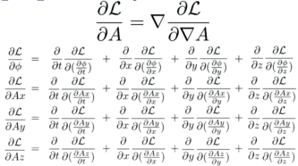

Derive the Euler-Lagrange equations
The Euler-Lagrange equations are used to generate field equations from a Lagrange density. Think of a Lagrange density as every way energy can be traded inside of a box. The action S integrates the Lagrange density (mass per volume) over space and time, resulting in t mass times time.
Notice that the action could be just about any value by integrating over different amounts of time, from a nano-second to a billion years.
The approach is to vary something in the action S so this integral does not change. This means that the "something" is a symmetry of the action. Where there is a symmetry, there is necessarily a conserved quantity.
This is a minimization problem, or more formally, the calculus of variations. the first types of minimization problems one learns are about the minimum value of something like a velocity at a point in space-time. this is about a minimization of a function over all of space-time. the mechanics are the same - take a derivative, set it to zero - but the thing that gets plugged in is different.
Examples
-
If the lagrange density is not a function of time, then time is a symmetry and energy is conserved.
-
If the lagrange density is not a function of space, then space is a symmetry and linear momentum is conserved.
-
If the lagrange density is not a function of angle, then rotation is a symmetry and angular momentum is conserved.
Counter example
- If a lagrange equation is a function of space and time, then energy and momentum are not conserved. this happens for systems that have friction. the energy and momentum go into waste heat. those terms usually are not included in the lagrange density.
Deriving the euler-lagrange equations
If a lagrange density depends on a 4-potential a and the derivatives of a, then vary these and find a minimum. this is the heart of the euler-lagrange equations.
This is a mimnum problem with the potential A and its derivative, A'.
1: Start with a Lagrange density that is a function of the potential and its derivatives.
Note that one is not allowed to vary position or speed. If we were to do the reverse - fix the potential and its derivative, but vary position and velocity - then we would be deriving the force equation from the same Lagrange density.
2: For the action by integrating over a volume of space-time.

3: Vary the action.
4: The problem is with the variation in A versus the variantion is the derivative of A. Use the product rule to get two variations in A.

5: A theorem of Gauss says:
so:
6: Subsitute 5 into the variation in 3:
7: The variation will be at the minimum if the variation in the action S is zero, which happends if the integrand is zero:
QED
There are so many partial differential equations when using Euler-Lagrange, people with thin you are brilliant.
